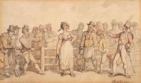
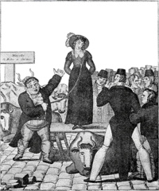
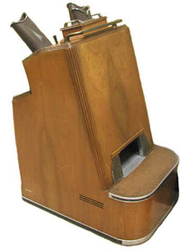

Wed, 07 Mar 2012 01:22:24 PST
Si te salía muy caro separarte de tu mujer podías venderla
Si te salía muy caro separarte de tu mujer podías venderla
Lo siento chicas, otra vez, y no sé cuántas van ya, vais a salir mal paradas en este post… la historia no ha sido muy benévola con vosotras. Hoy en día la legislación sobre las separaciones y divorcios está más que estipulada y regulada pero en la Inglaterra del siglo XVIII y XIX era un [...]Si te salía muy caro separarte de tu mujer podías venderla escrito por Javier Sanz en: Historias de la Historia
También puedes seguirnos en Twitter, Facebook y Google+
Lo siento chicas, otra vez, y no sé cuántas van ya, vais a salir mal paradas en este post… la historia no ha sido muy benévola con vosotras.
Hoy en día la legislación sobre las separaciones y divorcios está más que estipulada y regulada pero en la Inglaterra del siglo XVIII y XIX era un lujo que sólo los ricos y poderosos se podían permitir. Cuando un matrimonio de gente humilde se rompía o simplemente eran infelices, sólo había dos soluciones: aguantar y hacer de tripas corazón o vender a la esposa. Esta costumbre británica no tenía ninguna base legal, incluso a partir de mediados del siglo XIX comenzó a perseguirse, pero como la actitud de las autoridades era equívoca se practicaba (entre 1780 y 1850 quedaron registradas las ventas de más de 300 esposas, que no significa que fueran las únicas).

Esta costumbre llevaba parejo un ritual: el marido sólo tenía que traer a su esposa a la plaza del mercado con una soga alrededor del cuello, el brazo o la cintura. El marido intentaba colocar a su esposa vendiendo sus virtudes y ocultando sus defectos, y tras una subasta pública se adjudicaba el mejor postor entregándole un documento como prueba de propiedad. En este grabado de 1820 una vaca situada en el lugar exacto deja claro los motivos de la venta de la esposa…

No se ha registrado casos de ninguna esposa que hubiese sido subastada más de una vez por distintos maridos, pero sí algunos en los que el marido tuvo que volver a la plaza porque en su primera subasta no encontró pujadores. Respecto a los precios… varían mucho y en muchas ocasiones además del dinero se añadía a la puja algún barril de cerveza. Lo que está claro es que muchas mujeres que tuvieron que pasar por este mezquino y miserable trance ganaron con el cambio… dejaban atrás un matrimonio roto y a un marido que las había vendido.
Fuentes e imágenes: Forbes, Wife Sales, NeatoramaArtículos relacionados:
- El padre de Shakespeare era un conner muy particular
- Los cartuchos que causaron una rebelión
- El día que un lepero fue rey de Inglaterra
- El verdadero “Braveheart” no fue William Wallace
- La Armada Invencible. Enigmas de la Historia
Si te salía muy caro separarte de tu mujer podías venderla escrito por Javier Sanz en: Historias de la Historia
También puedes seguirnos en Twitter, Facebook y Google+
Sun, 04 Mar 2012 10:00:12 PST
Cuando las máquinas de rayos X se instalaban en las zapaterías
Cuando las máquinas de rayos X se instalaban en las zapaterías
Wilhelm Conrad Röntgen fue un físico alemán que el 8 de noviembre de 1895 produjo radiación electromagnética en las longitudes de onda correspondiente a los actualmente llamados rayos X. Aquel descubrimiento revolucionó el mundo científico hasta tal punto que al año de su descubrimiento ya se habían publicado unos 50 libros y más de 1.200 [...]Cuando las máquinas de rayos X se instalaban en las zapaterías escrito por Javier Sanz en: Historias de la Historia
También puedes seguirnos en Twitter, Facebook y Google+
Wilhelm Conrad Röntgen fue un físico alemán que el 8 de noviembre de 1895 produjo radiación electromagnética en las longitudes de onda correspondiente a los actualmente llamados rayos X. Aquel descubrimiento revolucionó el mundo científico hasta tal punto que al año de su descubrimiento ya se habían publicado unos 50 libros y más de 1.200 artículos en revistas científicas, siendo hoy en día uno de las principales herramientas de diagnostico de enfermedades y lesiones.
Todos los estudios y la abundante información de los rayos X contribuyeron a popularizar el nuevo descubrimiento y, como otros muchos descubrimientos, a buscarle usos alternativos. El 18 de enero de 1927, Jacob Lowe registró la patente nº US1614988 (A) “Method and means for visually determining the fit of footwear” (Método y medios para determinar visualmente el ajuste de calzado)… los llamados fluoroscope en EEUU o pedoscope en Reino Unido.

Entre 1930 y 1950 se instalaron en las mejores zapaterías estos artilugios – se calcula que en 1950 había unas 10.000 en uso – que consistían en un armario vertical de madera con una abertura en la parte inferior para colocar los pies y tres puntos de visión en la parte superior, uno para el vendedor y otras dos para los clientes a dos alturas según fuesen niños o adultos, desde los que se podía ver, gracias a los rayos X, la imagen de los huesos del pie y el contorno del zapato. Así se garantizaba que se compraba el zapato perfecto…
En la década de 1950, una serie de organizaciones profesionales médicas comenzaron a advertir de los riesgos de las exposiciones prolongadas a los rayos X. En 1957, en el Estado de Pensilvania, se prohibió el uso de los fluoroscopios, extendiéndose tal prohibición en la década siguiente a todo el país y a mediados de los setenta en el Reino Unido.
Fuentes: Universidades Asociadas Oak Ridge, Artículos relacionados:
- Las patentes más absurdas de la historia
- ¡Por una moneda, sienta la electricidad!
- ¡ No me entierren todavía… Que estoy vivo !
- Inventos curiosos de la Historia. Primera parte
- LoH: Y si nunca hubiésemos inventado la rueda?
Cuando las máquinas de rayos X se instalaban en las zapaterías escrito por Javier Sanz en: Historias de la Historia
También puedes seguirnos en Twitter, Facebook y Google+
Wed, 29 Feb 2012 01:15:52 PST
Precios y salarios en la antigua Roma
Precios y salarios en la antigua Roma
Hoy en día, tal como están las cosas, los que tenemos la suerte de tener un salario, comprobamos como disminuye mes a mes… y gracias. Nos vamos a dar un paseo por la antigua Roma, y gracias al Edicto de Precios Máximos o el Edicto de Diocleciano, vamos a ver qué salarios recibían algunas profesiones [...]Precios y salarios en la antigua Roma escrito por Javier Sanz en: Historias de la Historia
También puedes seguirnos en Twitter, Facebook y Google+
Hoy en día, tal como están las cosas, los que tenemos la suerte de tener un salario, comprobamos como disminuye mes a mes… y gracias. Nos vamos a dar un paseo por la antigua Roma, y gracias al Edicto de Precios Máximos o el Edicto de Diocleciano, vamos a ver qué salarios recibían algunas profesiones y a qué precios tenían que hacer frente.

Pergamino del Edicto
Cayo Aurelio Valerio Diocleciano Augusto, para los amigos Diocleciano, nació en el seno una familia humilde y fue escalando puestos en la jerarquía militar hasta convertirse en el comandante de la caballería del emperador Caro. Tras la muerte de Caro y de su hijo Numeriano, Diocleciano fue aclamado emperador por el ejército y gobernó desde el 20 de noviembre de 284 hasta el 1 de mayo de 305.
Durante lo segunda mitad del siglo III el Imperio Romano sufre una grave crisis -crisis imperial- alimentada por las guerras civiles, las luchas por el poder, la presión de los bárbaros, la peste y una profunda depresión económica agravada por los caprichos monetarios (acuñando moneda propia) de los codiciosos emperadores. En 301, para poner un poco de orden, Diocleciano decide promulgar el Edicto de Precio Máximos para estabilizar la moneda y atemperar la grave crisis económica. El cumplimiento del edicto era obligatorio en todo el Imperio y, además, fijar precios superiores estaba penado con la muerte. Esto son algunos de los precios y salarios, en denarios, que se fijaron en el edicto:
- Trabajador agrícola - 25 al día
- Carpintero o albañil – 50 al día
- Pintor (brocha gorda) – 75 al día
- Pintor (de cuadro) – 150 al día
- Tejedor de lana – 175 por manto
- Panadero – 50 al día
- Construcción de barcos, fluviales y marítimos – 50 y 60 al día respectivamente.
- Arriero – 25 al día
- Barbero/peluquero – 2 por persona
- Limpiador de cloacas - 25 al día
- Escriba, para mejorar la escritura – 25 por cada 100 líneas. Redacción de peticiones o documentos públicos – 10 por cada 100 líneas.
- Maestro: desde 50 al mes por alumno para los de niños hasta 250 al mes por alumno para los de Retórica.
- Legionario medio – 15.400 al año incluido el valor del trigo que recibían al año.
- Guardia Pretoriana – 19.000 al año incluido el trigo.
- Trigo, un modio (8,75 kg.) – 100
- Cebada y centeno, un modio – 60
- Lentejas, un modio – 100
- Sal, un modio – 100
- Judías, un modio – 100
- Arroz, un modio – 200
- Vino, como un Rioja o Ribera del Duero, un sextarius (1/2 litro) – 30
- Vino de mesa o de la casa, un sextarius – entre 8 y 16
- Cerveza gala, un sextarius - 4
- Cerveza egipcia, un sextarius – 2
- Miel, como la de la Alcarria, un sextarius – 40
- Aceite de oliva, un sextarius – 40
- Carne de cerdo o de venado, una libra (326 gramos) - 12
- Carne de vaca, una libra – 8
- Un pollo – 60
- Un faisán – 250
- Pescado de mar, una libra – entre 16 y 24. Para los de río, un libra – entre 8 y 12
- Pescado salado, una libra – 6
- Mantequilla, una libra – 16
Es muy difícil hacer una comparativa de estos precios con los actuales pero puede servir para hacernos una idea de lo que podía adquirir cada ciudadano romano con su salario y las diferencias entre las distintas profesiones. Además, también hay que tener en cuenta que el porcentaje del salario que gastamos en alimentos nada tiene que ver con el empleado en la antigua Roma. Como curiosidades: la gratificación por una victoria de un gladiador podría equivaler a la salario anual de un maestro y el auriga Cayo Apuleyo Diocles, el Fernando Alonso de la época, llegó a ganar en toda su carrera unos 35 millones de sestercios (un denario – cuatro sestercios) en el siglo II.
Fuentes: Forum Ancient Coins, Constantine the Great coins, Artículos relacionados:
- December
- El error en un cuadro del siglo XIX todavía se paga hoy
- Las bodas de Nerón… con sus novios
- Clases de putas en la antigua Roma.
- Archienemigos de Roma. Alarico
Precios y salarios en la antigua Roma escrito por Javier Sanz en: Historias de la Historia
También puedes seguirnos en Twitter, Facebook y Google+
Mon, 27 Feb 2012 01:45:44 PST
El latín nos explica por qué cualquiera puede ser ministro pero no maestro
El latín nos explica por qué cualquiera puede ser ministro pero no maestro
Antes de dar la oportuna explicación os voy a contar una anécdota, que muchos ya conoceréis, sobre la importancia del latín. En cierta ocasión José Solís Ruiz, ministro de Trabajo durante el régimen franquista y natural de Cabra (Córdoba), le discutía al político y rector de la Universidad Complutense, profesor Muñoz Alonso, para qué servía [...]El latín nos explica por qué cualquiera puede ser ministro pero no maestro escrito por Javier Sanz en: Historias de la Historia
También puedes seguirnos en Twitter, Facebook y Google+
Antes de dar la oportuna explicación os voy a contar una anécdota, que muchos ya conoceréis, sobre la importancia del latín. En cierta ocasión José Solís Ruiz, ministro de Trabajo durante el régimen franquista y natural de Cabra (Córdoba), le discutía al político y rector de la Universidad Complutense, profesor Muñoz Alonso, para qué servía el latín. El profesor le respondió:
Por de pronto, señor ministro, para que a Su Señoría, que ha nacido en Cabra, le llamen egabrense y no otra cosa.

Y volviendo al título de este post, vamos a servirnos de la etimología, y el latín, para explicar por qué cualquiera puede ser ministro pero no maestro.
El término maestro deriva de magister y este, a su vez, del adjetivo magis que significa más o más que. El magister lo podríamos definir como el que destaca o está por encima del resto por sus conocimientos y habilidades. Por ejemplo, Magister equitum (jefe de caballería en la Antigua Roma) o Magister militum (jefe militar).
El término ministro deriva de minister y este, a su vez, del adjetivo minus que significa menos o menos que. El minister era el sirviente o el subordinado que apenas tenía habilidades o conocimientos.
Por tanto, queda demostrado que para ser ministro no hace falta ser… nada.
Fuente: Memoria de la Historia – Carlos FisasArtículos relacionados:
- Solidaridad
- Las torturas de la Inquisición
- El Vaticano se basa en dos mentiras
- Dieron su hoy por nuestro mañana.
- Historia de una deuda moral con el pueblo saharaui
El latín nos explica por qué cualquiera puede ser ministro pero no maestro escrito por Javier Sanz en: Historias de la Historia
También puedes seguirnos en Twitter, Facebook y Google+